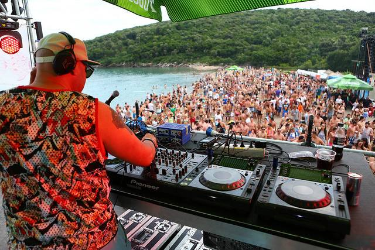

Field guide · Live calendar
Montenegro Events June–July 2026: Verified Concerts, Festivals, Wine & Kids
A verified calendar of what is happening across the Montenegrin coast between 14 June and 5 July 2026. All events were confirmed against the Luštica Bay 2026 official calendar, the Budva Summer Festival programme, the Festival Days in Montenegro listing, and Tivat Tourism announcements. Reconfirm 24 hours before any event — venues sometimes shift times or relocate due to weather.

TL;DRHeadline events overlapping 14 June – 5 July 2026: Morcheeba (20 June), Boris Grebenshikov (21 June), SuperWine (26–28 June), Full Moon Party (30 June), Budva Summer Festival (2–7 July), Festival Days Bar (30 June – 4 July), Josipa Lisac (4 July). All times 21:00 unless noted.
Luštica Bay 2026 calendar — June & early July
18 JuneWed
Just Dance PartyKids / family · open
Music, movement, group participation. Easy first-week event to meet families.
Music, movement, group participation. Easy first-week event to meet families.
Piazza Centrale
Luštica Bay · 19:00
Luštica Bay · 19:00
20 JuneFri
Morcheeba in Concert
Trip-hop legends live by the water. One of the main June concerts on the Luštica Bay 2026 calendar.
Trip-hop legends live by the water. One of the main June concerts on the Luštica Bay 2026 calendar.
Small Breakwater
Luštica Bay · 21:00
Luštica Bay · 21:00
21 JuneSat
Boris GrebenshikovTickets on Songkick
Legendary Russian rock musician. Major draw for the Russian-speaking community.
Legendary Russian rock musician. Major draw for the Russian-speaking community.
Culture Center
Tivat
Tivat
21 JuneSat
Recycled Fabrics Art WorkshopKids / family
Mixed-materials creative session.
Mixed-materials creative session.
Pine Alley Park
Luštica Bay · 18:00
Luštica Bay · 18:00
23 JuneMon
Mario Kart TournamentFamily / teens
Piazza Centrale
Luštica Bay · 19:00
Luštica Bay · 19:00
25 JuneWed
Magic ShowFamily
Piazza Centrale
Luštica Bay · 19:00
Luštica Bay · 19:00
26 JuneThu
SuperWine 2026 · Opening Dinner
Opening night of the SuperWine weekend at The Chedi.
Opening night of the SuperWine weekend at The Chedi.
The Chedi
Luštica Bay
Luštica Bay
27 JuneFri
SuperWine 2026 · Main Event
Headline tasting event. Premium wine + food. Open to non-resort guests.
Headline tasting event. Premium wine + food. Open to non-resort guests.
Small Breakwater
Luštica Bay
Luštica Bay
28 JuneSat
SuperWine 2026 · After-party
Daytime closing party at Azure Beach.
Daytime closing party at Azure Beach.
Azure Beach
Luštica Bay
Luštica Bay
30 JuneMon
Bubble Show + Full Moon Party Vol.2 — Manda Moor
Daytime kids show + evening beach party.
Daytime kids show + evening beach party.
Piazza Centrale 19:00
Pecka Beach 21:00
Pecka Beach 21:00
2 JulWed
Build A Box CityFamily creative
Pine Alley Park
Luštica Bay · 18:00
Luštica Bay · 18:00
4 JulFri
Josipa Lisac in Concert
Iconic Yugoslav vocalist live. Open-air at the small breakwater.
Iconic Yugoslav vocalist live. Open-air at the small breakwater.
Small Breakwater
Luštica Bay · 21:00
Luštica Bay · 21:00
5 JulSat
Mega PicassoFamily creative day
Pine Alley Park
Luštica Bay · 18:00
Luštica Bay · 18:00
Other coast events overlapping these dates
30 Jun – 4 Jul
XXIV Festival Days in MontenegroFolk + dance ensembles, parades, opening in Bar
Multi-day folklore festival on Bar / Petrovac coast. mioff.org
Multi-day folklore festival on Bar / Petrovac coast. mioff.org
Bar · Petrovac
2–7 Jul
XXII Budva Summer FestivalInternational Music + Dance · WOFA
Six-day music and dance festival. Performances mostly in old town and along the Budva waterfront. wofafestivals.com
Six-day music and dance festival. Performances mostly in old town and along the Budva waterfront. wofafestivals.com
Old Town
Budva
Budva
Mid-June – August
Tivat Cultural Summer · Purgatorije
Tivat's Mediterranean theatre festival. Open-air old town. Tickets €5–15. Full daily programme on tivat.travel.
Tivat's Mediterranean theatre festival. Open-air old town. Tickets €5–15. Full daily programme on tivat.travel.
Old Town
Tivat
Tivat
All summer
Grad Teatar Budva
One of Montenegro's oldest cultural institutions. Performances, concerts, theatre through July and August in the medieval old town.
One of Montenegro's oldest cultural institutions. Performances, concerts, theatre through July and August in the medieval old town.
Old Town
Budva
Budva
22 July
Fašinada in Perast(after this window)
Traditional boat parade and rock-throwing ritual at Our Lady of the Rocks. Very local, beautiful.
Traditional boat parade and rock-throwing ritual at Our Lady of the Rocks. Very local, beautiful.
Perast
How to verify dated events
- Official Luštica Bay calendar — lusticabay.com/blog/cultural-events-montenegro-2026-lustica-bay/
- Luštica Bay kids events — kids-events-montenegro-2026-lustica-bay
- The Chedi Summer 2026 — chedilusticabay.com/this-season
- Tivat Tourism Organisation — tivat.travel/en/
- Budva Summer Festival — WOFA Festivals
- Festival Days in Montenegro — mioff.org
- Vijesti 2026 festival summary — Vijesti
Where to buy tickets
- Luštica Bay concerts — usually free admission, or tickets via the venue website close to the date.
- Tivat Culture Center — box office at the venue, or online closer to date.
- Budva Summer Festival — WOFA Festivals website.
- SuperWine 2026 — Luštica Bay events team (events@lusticabay.com).
- Public concerts (Sea Dance) — free with registration via EXIT site.